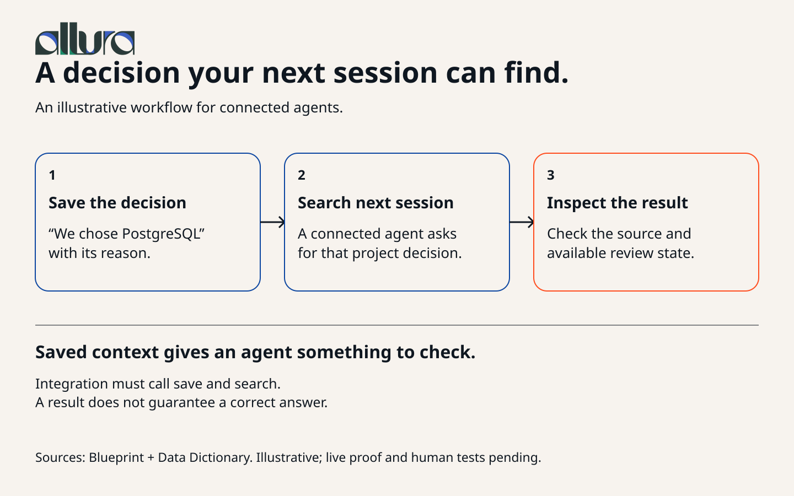
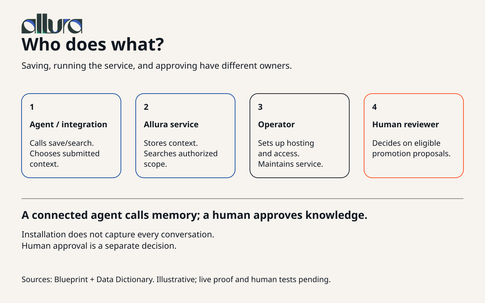
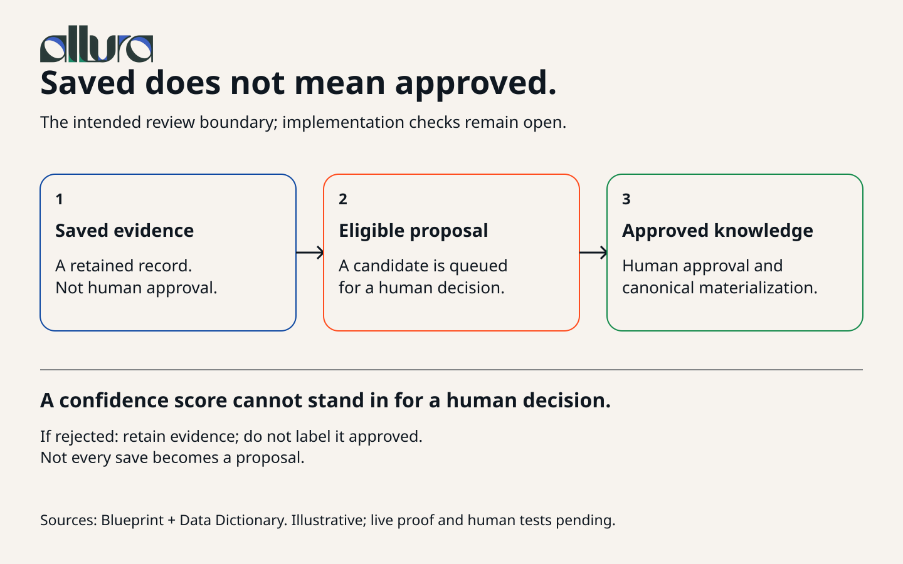

A decision your next session can find.

Text explanation and sources
A decision your next session can find. Numbered flow, read left to right on desktop and top to bottom on phone: a connected agent saves the PostgreSQL decision with its reason; another session searches; a person or agent inspects the returned source and available review state. This is an illustrative workflow, not a verified live run or a guarantee of correct recall.
Source-inspected explanation: Blueprint, Data Dictionary, Design. Scope and authority receipt. No live journey or human-study pass is claimed.
Desktop SVG · Phone SVG · Desktop PNG · Phone PNG
Who does what?

Text explanation and sources
Who does what? Four responsibility cards, read in numerical order. The agent or integration calls save and search and chooses context. Allura stores submitted context and searches within authorized scope. The operator configures hosting and access and maintains the service. An independent human reviewer decides on eligible promotion proposals. Installation does not automatically capture every conversation.
Source-inspected explanation: Blueprint, Data Dictionary, Design. Scope and authority receipt. No live journey or human-study pass is claimed.
Desktop SVG · Phone SVG · Desktop PNG · Phone PNG
Saved does not mean approved.

Text explanation and sources
Saved does not mean approved. The intended flow reads from saved evidence to an eligible proposal to human approval and canonical materialization. Not every save becomes a proposal. Rejection retains evidence without labeling it approved knowledge. A confidence score does not replace a human decision. This explains intended policy, not proof that every current implementation path meets it.
Source-inspected explanation: Blueprint, Data Dictionary, Design. Scope and authority receipt. No live journey or human-study pass is claimed.
Desktop SVG · Phone SVG · Desktop PNG · Phone PNG